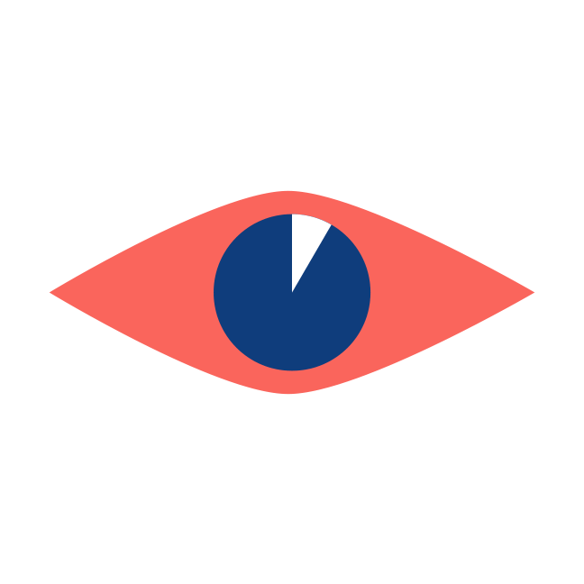

We are concerned with default settings, security literacy and the future of the web. We are here to seek clarity, to try to understand and to take action.
Project weitsicht, which means foresight, is a browser extension and online space that allows digital citizens to share insights on their internet browsing routine.
FAQ
Why is this important?We believe that you should be in control of your online appearance and data. We love technology - but we believe that we should own the pixels and understand what we share.
I have picked up a pixel on a public space. What is next?Welcome to weitsicht and thanks for visiting. Why not install our browser extension and become part of our community?
How to post?Everyone can post! You are part of weitsicht. Did you recently change your settings on a social media account? Show us how to do it! Or how do you imagine the future of the web will look to us? We are interested. We seek your opinion.